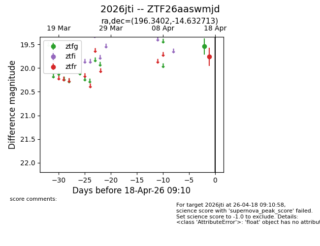
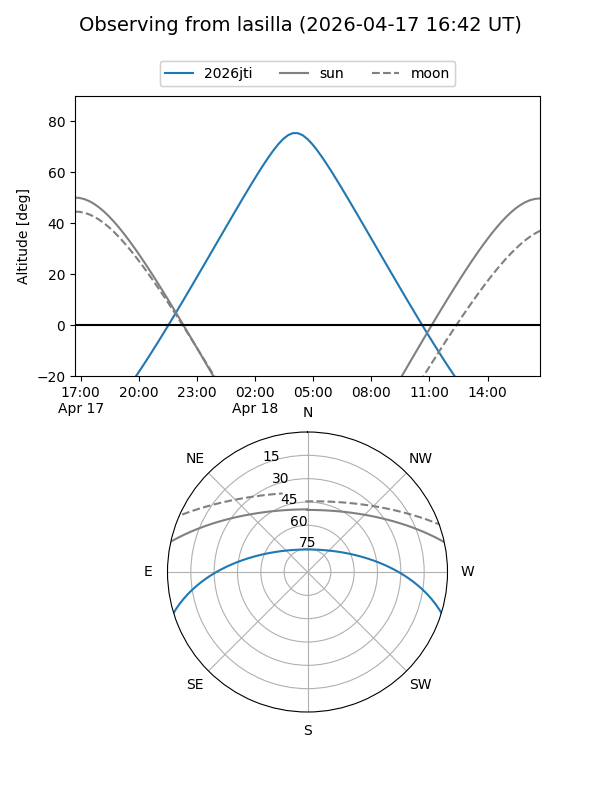
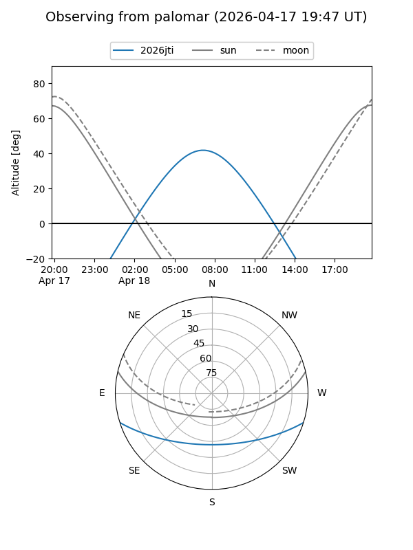
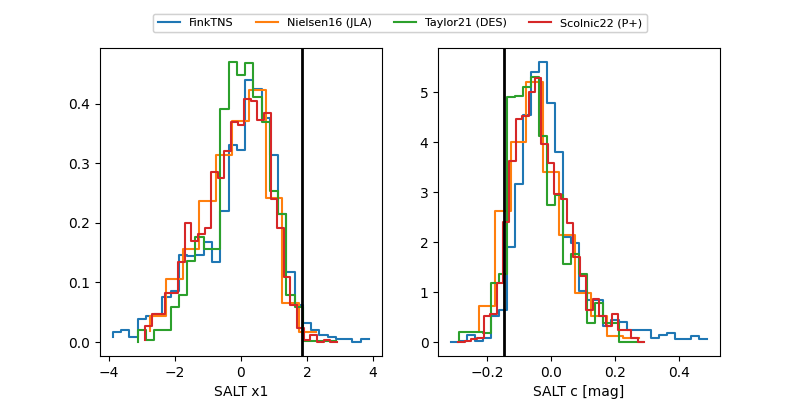

2026jti
Target 2026jti at 2026-04-18 09:15
Aliases and brokers:
FINK: link
Lasair: link
ALeRCE: link
TNS: link
YSE: link
alt names
ZTF26aaswmjd (ztf,fink_ztf)
2026jti (tns,yse)
Coordinates:
equatorial (ra, dec) = 196.3402,-14.63271
equatorial (HMS+DMS) = 13:05:21.66,-14:37:57.77
galactic (l, b) = (307.9786,+48.10256)
Flags:
Photometry:
last ztfg=19.54, ztfr=19.76
1 ztfg, 1 ztfr detections
Lightcurve

Visibility


Additional plots
